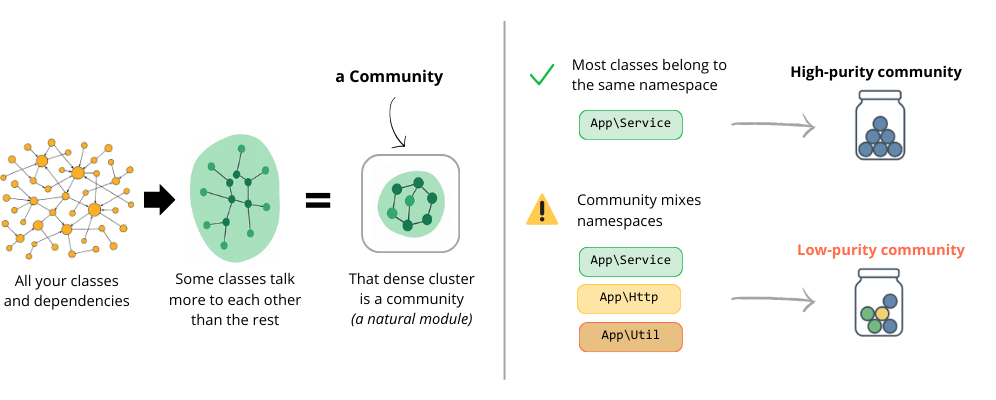

Graph communities detected via label propagation on the dependency graph.

| node | namespace | boundary | in | out |
|---|
Each dot represents a namespace (aggregated at 3 levels of depth), grouped by detected community. Color = namespace identity. Hull border = health (green=healthy, red=risky). Click a cluster to zoom in, hover for details.
Visualize your architecture layers and dependencies
| Community | Purity | Top namespaces |
|---|---|---|
| {% for k, n in cm.DisplayNamePerComm %}{% if k == id %}{{ n }}{% endif %}{% endfor %} | {% set purity_pct = purity * 100 %} {% if purity_pct >= 80 %} {% set purity_bar = "bg-emerald-500" %} {% elif purity_pct >= 60 %} {% set purity_bar = "bg-amber-500" %} {% else %} {% set purity_bar = "bg-rose-500" %} {% endif %}
|
{% for k, ns in cm.TopNamespacesPerComm %}
{% if k == id %}
{% for s in ns %}
{{ s }}
{% endfor %}
{% endif %}
{% endfor %}
|